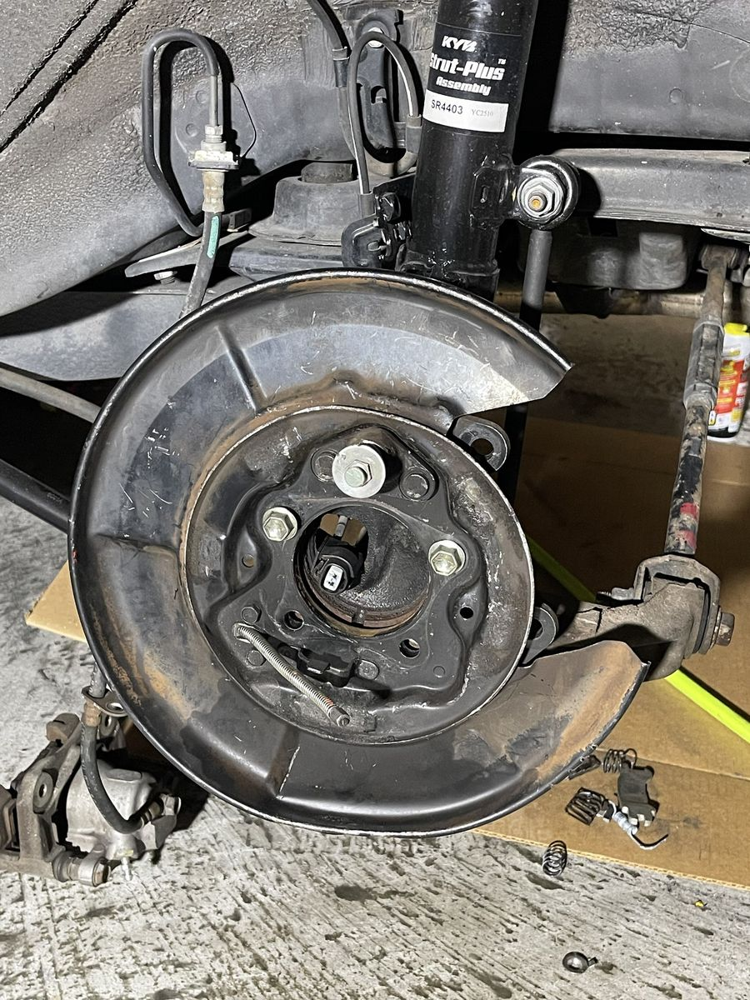

Meet Maya. She is in 5th grade and she is helping her family fix the brake on the back of their car. The round brake plate got stuck to the hub, so everything had to come apart. Now Maya is going to put it all back together, one step at a time. When you see the yellow Grown-up tag, that step needs an adult's hands or an adult watching.
Tap a number to see what that part is. The red ones are things to fix before you go on.

Think of a jar lid that sat in the rain. Rust grew between the rotor and the hub, and between the hub and the knuckle, and glued them together. Rust takes up more room than the clean metal did, so the parts got squeezed tight. Cleaning off all that rust is the most important part of this job.
This plays by itself. Each step lasts a few seconds. Use Back and Next to go at your own speed, or press Read to me to hear each step out loud.
Best tip first: the passenger side rear brake is still put together. Pull that wheel and take photos. It is a mirror copy of your side, like looking at your left hand to see how your right hand works.
Car on jack stands on flat ground. Chocks on the front tires. Parking brake will not work on this side right now, so the chocks matter. Grown-up
In your photo the caliper is sitting on the floor hanging from its rubber hose. Lift it and tie it to the spring or strut with a zip tie or bungee.
The hose is like a straw. If you pull and bend it too hard it can tear inside, and then the brake fails.
Wire brush the hole in the knuckle where the hub sits, the face where the hub touches, and the back of the dust shield. Then spray brake cleaner and wipe. Shiny metal is the goal.
Like brushing your teeth. If you leave crumbs, the problem comes back.
Take off the 1 bolt and 2 nuts that are holding the dust shield on for now. Put a thin coat of anti-seize in the knuckle hole. Feed the ABS sensor wire through, then slide the new hub in. Put the 4 hub bolts in from the back and snug them in a crisscross. Then torque them.
Hub bolts: 59 ft-lb (80 N·m)
Push the sensor plug into its connector until it clicks. Clip the wire back into its holders so it can't rub on anything. If this is loose, the ABS light comes on.
The dust shield has small raised bumps where the parking brake shoes rub. Put a tiny dab of high-temp brake grease on each one. Only a dab. Grease must never touch the shoe lining or rotor.
Hook the parking brake cable to the lever on the back shoe first. Set each shoe on the plate and lock it with its hold-down pin, spring, and cup: push the cup in and turn it a quarter turn.
The cup works like a childproof medicine cap. Push and twist.
Put the star wheel adjuster between the shoes with the star wheel screwed almost all the way in (short). Hook the springs on, using your photos of the other side as the map. A spring tool makes this easier. Wiggle the shoes. They should sit flat and move together.
Wipe the hub face clean. Put a very thin ring of anti-seize on the center lip of the hub only (not the flat face). Slide the rotor over the shoes. If it won't fit, make the star wheel shorter.
Pull the rubber plug out of the hole in the rotor. Turn the rotor until you see the star wheel through the hole. Use a flat screwdriver to click the star wheel until the rotor won't turn. Then back it off about 8 clicks until the rotor spins free with just a light brush sound. Put the plug back.
Like tightening shoelaces, then loosening them just enough to walk.
Bolt the caliper bracket on. Clean the pad clips, grease the slide pins, put the pads in, then set the caliper over the pads and put the two slide bolts in. Check the hose is not twisted.
Caliper bracket bolts: 45 ft-lb (61 N·m)
Caliper slide bolts: 20 ft-lb (27 N·m)
Spin the lug nuts on by hand. Tighten them in a star pattern, not around the circle. Lower the car, then do the final torque on the ground.
Lug nuts: 76 ft-lb (103 N·m)
Before the car moves, pump the brake pedal until it feels firm. Check the brake fluid level. Test the parking brake. Then an adult drives slowly in an empty lot and listens for noises. To break in the new parking brake shoes, Toyota says to drive about 30 mph and lightly hold the parking brake pedal for about a quarter mile, 2 or 3 times.
| Part | Tighten to | Tip |
|---|---|---|
| Rear hub bolts (4) | 59 ft-lb · 80 N·m | Crisscross order |
| Caliper bracket bolts (2) | 45 ft-lb · 61 N·m | Clean threads first |
| Caliper slide bolts (2) | 20 ft-lb · 27 N·m | Easy to over-tighten |
| Lug nuts (5) | 76 ft-lb · 103 N·m | Star pattern, car on the ground |
These are the usual factory numbers for the 2007 to 2012 ES350 and its twin, the 2007 to 2011 Camry. Online sources don't all agree, so check them against the sheet that came with your hub or a factory manual before you trust them.
The 2007 to 2012 ES350 is built on the same base as the 2007 to 2011 Toyota Camry, so the Camry videos show the same back brake: a disc brake with a tiny drum brake hiding inside the rotor for the parking brake.